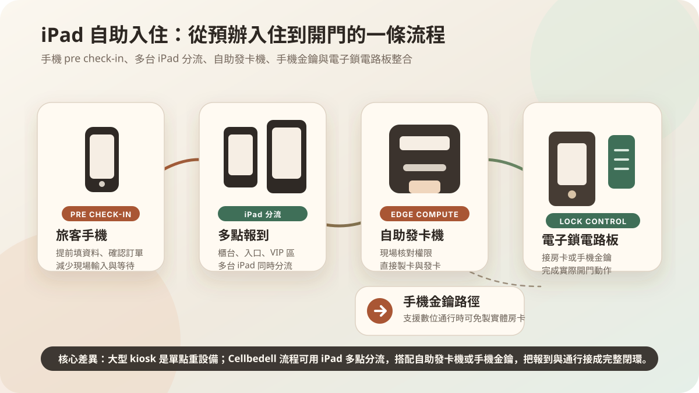

เมื่อโรงแรมเริ่มประเมิน self check-in ภาพแรกที่มักนึกถึงคือ kiosk ขนาดใหญ่: เครื่องตั้งพื้น มีจอ card reader เครื่องพิมพ์ อาจเชื่อม payment, passport scan และ keycard issuing. แต่สำหรับโรงแรมขนาดเล็ก ที่พักบูติก หรือที่พักที่กำลังปรับ front desk workflow ขั้นแรกไม่จำเป็นต้องซื้อเครื่องใหญ่เสมอไป.
คำถามที่สำคัญกว่าคือ: ข้อมูลไหนทำออนไลน์ล่วงหน้าได้? Identity, payment และ booking status อะไรต้องเช็กหน้างาน? Keycard และ access permission อะไรทำผ่าน iPad, Cellbedell card issuer และ decentralized edge computing ได้ทันที?

Large kiosk แก้ peak queue แต่ไม่เหมาะกับทุกพื้นที่
Large check-in kiosk เหมาะกับโรงแรมที่มีแขกจำนวนมากมาพร้อมกัน workflow มาตรฐาน พื้นที่พอ และระบบ PMS, payment, lock และ keycard ชัดเจน. มันช่วยแบ่งคิว front desk ให้แขกยืนยัน booking ชำระเงิน รับบัตร หรือพิมพ์เอกสารเองได้.
แต่ kiosk ขนาดใหญ่ก็มาพร้อมต้นทุน hardware พื้นที่ติดตั้ง maintenance และการเปลี่ยนอุปกรณ์. สำหรับโรงแรมห้องไม่มาก พื้นที่ front desk จำกัด หรือยังทดสอบการยอมรับ self check-in อยู่ ต้นทุนเริ่มต้นอาจสูงเกินจำเป็น.
การตัดสินใจแรกจึงไม่ใช่ “ซื้อ kiosk ไหม” แต่คือ “อยาก automate ส่วนไหนของ guest journey ก่อน”: ยืนยันข้อมูล payment status housekeeping status card issuing หรือ access permission.
ต้นทุนอยู่ที่วิธีติดตั้งทั้งหมด
เวลาเปรียบเทียบ large kiosk กับ iPad self check-in ไม่ควรดูแค่ราคาต่อเครื่อง. โรงแรมต้องดู total deployment cost: hardware, installation, counter space, system integration, maintenance, spare parts, training และถ้าต้องเพิ่มจุด check-in ที่สองหรือสามจะทำอย่างไร.
Large kiosk รวมจอ ตัวเครื่อง reader printer scanner และ card issuing ไว้ในเครื่องเดียว เหมาะกับโรงแรมขนาดใหญ่หรือ flow สูง. แต่ก็หมายถึง single point ที่หนัก เคลื่อนยาก และเมื่อซ่อมบำรุงจะกระทบ flow หน้างานมาก.
iPad self check-in ร่วมกับ Cellbedell card issuer มีโครงสร้างต้นทุนแบบ decentralized edge computing. โรงแรมเริ่มจากจุดเดียวได้ ใช้ iPad เป็น guest interface และให้ card issuer, mobile key หรือ lock circuit board ทำ permission และ access control ที่ local node. ถ้าต้องเพิ่มจุดในอนาคต ก็ขยายตามตำแหน่ง front desk, entrance หรือ unmanned counter ได้.
พูดอีกแบบ large kiosk คือการลงทุนแบบ centralized equipment; Cellbedell แยก self check-in เป็น edge nodes ที่ขยายได้. สำหรับโรงแรมขนาดเล็กและกลาง แบบหลังมักควบคุมงบเริ่มต้นและปรับตาม peak time ได้ง่ายกว่า.
iPad front desk เหมาะกับ lightweight workflow
iPad self check-in วางลงใน front desk เดิมได้ง่าย และเชื่อมกับ Cellbedell card issuer. แขกยืนยัน booking กรอกข้อมูล และทำขั้นตอนจำเป็นบน iPad จากนั้นระบบใช้ decentralized edge computing ตรวจข้อมูลและ permission ที่ local node แล้วออก keycard ได้ทันที.
สำหรับทีมปฏิบัติการ การใช้ iPad + card issuer ปรับตำแหน่งง่าย และเหมาะกับ multi-point deployment. แต่ละจุด check-in เป็น edge node ได้: ข้าง front desk สำหรับแบ่งคิว, ทางเข้าที่พักสำหรับ unmanned counter หรือจุดบริการพิเศษใน lobby.
วิธีนี้ไม่จำเป็นต้องแทนบริการทั้งหมด. งานซ้ำๆ เช่นกรอกข้อมูล ตรวจ booking ออกบัตร และตั้งค่า access สามารถให้ edge node ทำ ส่วน exception ยังให้พนักงานจัดการ.
Self check-in ต้องต่อข้อมูล payment และ access เป็นเส้นเดียว
จากมุมแขก ขั้นตอนเข้าพักดูเหมือนง่าย: ยืนยันตัวตน ยืนยัน booking ชำระเงินหรือมัดจำ ได้ห้อง และได้วิธีเข้า. แต่หลังบ้านมีระบบจำนวนมาก: PMS, reservation data, payment status, housekeeping, keycard/access permission, notification และ service record.
ถ้าจุดเหล่านี้ไม่ต่อกัน แขกจะเจอ friction ที่คุ้นเคย: กรอกข้อมูลแล้วต้องกรอกซ้ำ จ่ายแล้วต้องยืนยันซ้ำ ได้ห้องแล้วแต่ยังรอคนทำบัตร.
คุณค่าของ iPad self check-in คือจัดข้อมูลเหล่านี้เป็นทางเข้าชัดเจน แล้วส่งต่อให้ Cellbedell card issuer ทำ keycard และ access permission หน้างาน. มันเป็นได้ทั้งหน้าจอสำหรับแขก และ service tool สำหรับพนักงาน.
เมื่อไร iPad flow ยืดหยุ่นกว่า kiosk
- มี peak check-in สูง แต่ไม่อยากให้เส้นทางถูกจำกัดด้วย kiosk เครื่องเดียว.
- PMS พร้อมให้ pre check-in บนมือถือก่อนมาถึง.
- อยากลดแรงกดดันของ hardware หน้างาน โดยใช้ mobile key ในบางสถานการณ์ และ card issuer ในสถานการณ์ที่ต้องใช้บัตรจริง.
- ต้องการเชื่อม electronic lock เข้า workflow เต็ม ไม่ใช่แค่ต่อเข้ากับประตูเดิม.
ในกรณีเหล่านี้ iPad self check-in + mobile pre check-in + Cellbedell card issuer + lock circuit board integration จะยืดหยุ่นกว่า large kiosk. แกนสำคัญคือ decentralized edge computing: ไม่ใช่แค่กรอกแบบฟอร์ม แต่เชื่อมข้อมูลก่อนมาถึง การออกบัตร mobile key และ access จริงให้เป็น workflow เดียว.
ขั้นต่อไปคือ access management
Self check-in ไม่ควรหยุดที่หน้าจอ check-in แต่ควรต่อไปถึง room card, room door, elevator, facilities, staff permission, visitor registration และ temporary access.
ถ้าพื้นที่ของคุณต้องจัดการ visitor, staff และ access permission อ่านต่อได้ที่: AI Visitor Management System เชื่อมกับ smart access control อย่างไร.
ข้อมูลผลิตภัณฑ์เพิ่มเติมดูได้ที่หน้า Cellbedell hotel self check-in. หากต้องการประเมินงบประมาณเบื้องต้น ลองใช้ StayAuto cost calculator.